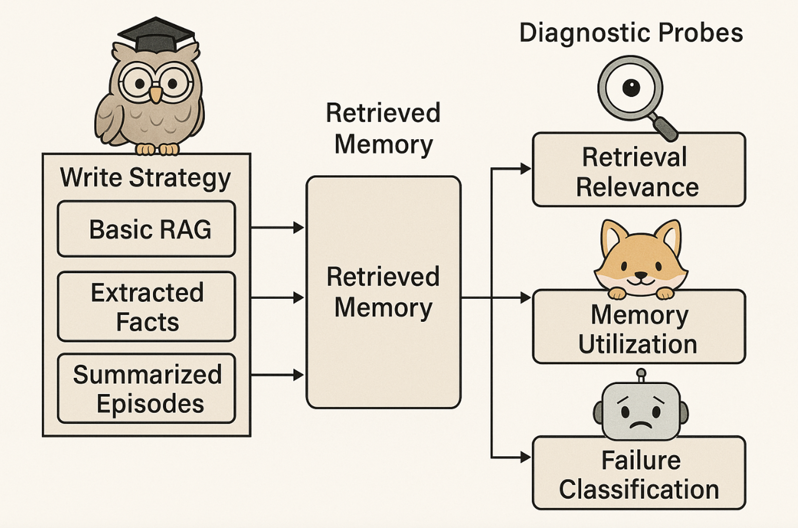
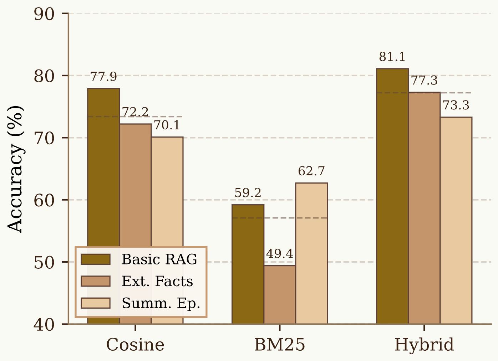
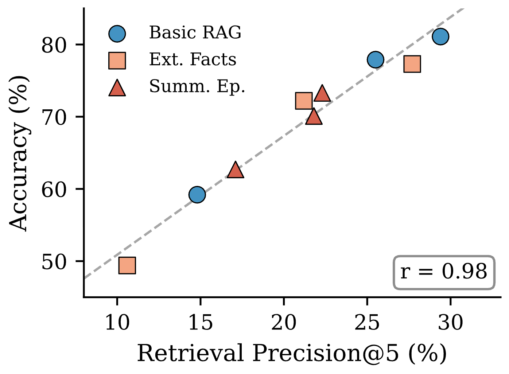
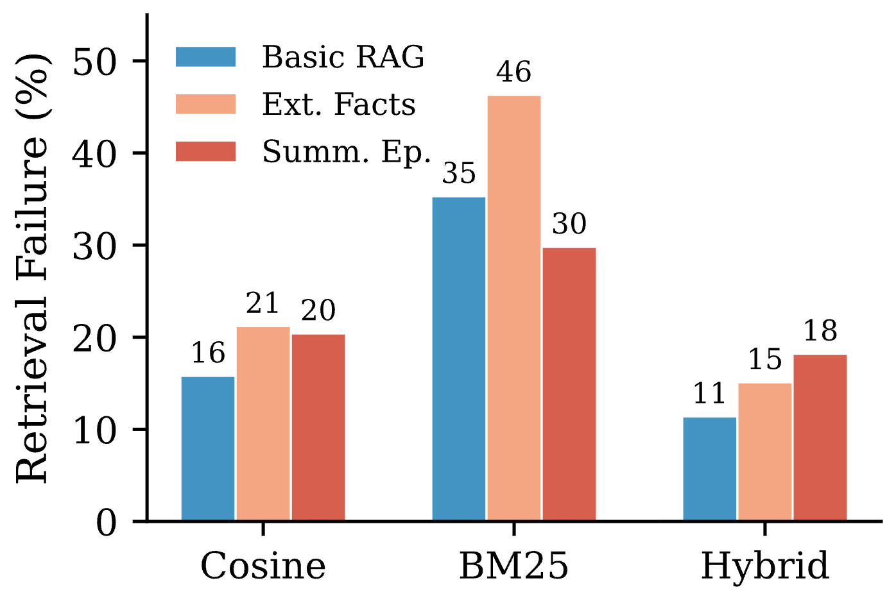
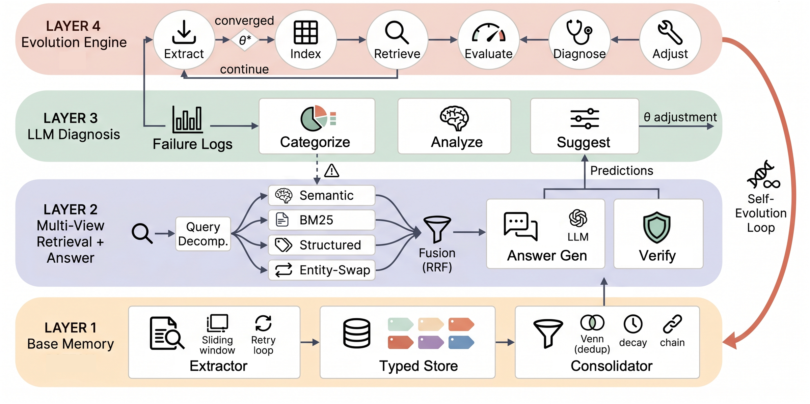
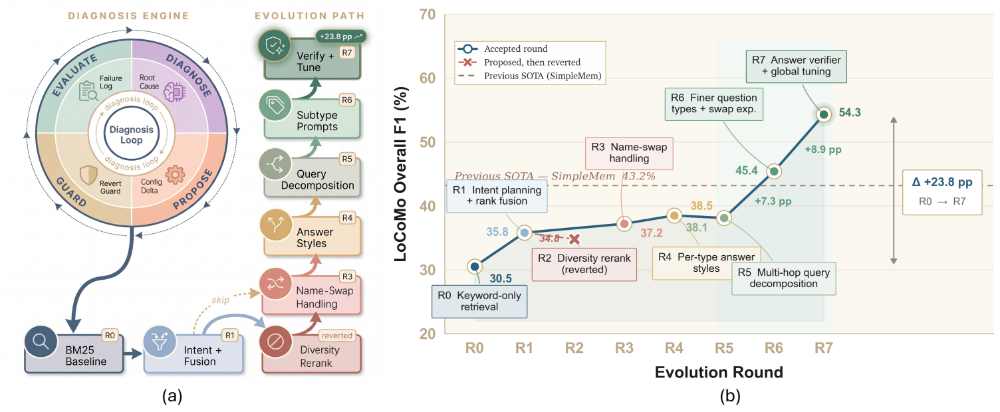

研究动机
许多 agent memory 工作倾向于引入更复杂的写入策略，例如事实抽取、会话摘要、记忆链接或 learned memory management。然而，当系统最终回答错误时，仅凭 accuracy 无法判断错误来自写入阶段的信息损失、检索阶段的证据缺失，还是生成阶段的上下文利用不足。
Group Meeting Report | LLM Agent Memory
本报告围绕两项 2026 年 agent memory 研究展开。第一项研究通过受控实验诊断长期记忆问答中的 retrieval 与 utilization 瓶颈；第二项研究提出 EvolveMem，将检索策略、融合方式、上下文预算和验证机制纳入可演化配置空间。
作者认为很多长期记忆 benchmark 只报告端到端 accuracy，无法定位错误发生在 memory pipeline 的哪个环节。它的贡献是把检索到生成之间的边界拆开，用探针分别看 retrieval relevance、memory utilization 和 failure mode。
许多 agent memory 工作倾向于引入更复杂的写入策略，例如事实抽取、会话摘要、记忆链接或 learned memory management。然而，当系统最终回答错误时，仅凭 accuracy 无法判断错误来自写入阶段的信息损失、检索阶段的证据缺失，还是生成阶段的上下文利用不足。
如果 retrieval 是主要瓶颈，那么不同检索方法之间会拉开明显准确率差距，并且 retrieval precision 应该与下游 accuracy 高度相关；相反，如果 utilization 是主要瓶颈，则即使取回相关记忆，模型也会经常答错。
作者发现 retrieval method 影响远大于 write strategy。Basic RAG 的 raw chunks 在多数组合中匹配或超过更昂贵的 fact extraction 和 summarization；错误样本中 retrieval failure 是主要波动来源。
研究一 | 方法设计
作者固定 LoCoMo、backbone、embedding 和 top-k 预算，只改变两组变量：memory 写入策略和 retrieval 方法。这样能把“写入什么”和“如何检索”的影响拆开。

LLM judge 判断 top-k retrieved memories 中哪些条目包含回答问题所需信息。这个指标直接衡量生成前拿到的证据质量。
同一个问题分别生成带 memory 和不带 memory 的回答，再判断 memory 是 Beneficial、Harmful、Ignored 还是 Neutral。
错误样本分为 retrieval failure、utilization failure 和 hallucination。这里的 retrieval failure 是从生成边界看“没有足够可用上下文”。
三种 memory store 都来自同一批原始对话，差异只在写入表示：raw chunks 保留局部上下文，fact extraction 把内容压成独立事实，summaries 把 session 压成叙事摘要。作者故意不把 learned memory systems 纳入主实验，避免把训练策略、索引结构和检索器混在一起。
每个问题的最终上下文预算保持一致，都是 k = 5。Hybrid+Rerank 不是简单拼接：先扩大 cosine 与 BM25 的候选覆盖，再由 LLM judge 重排到固定预算。这样能区分“候选召回不足”和“排序质量不足”。
| Probe | 具体输入 | 判定输出 | 汇报时要强调的含义 |
|---|---|---|---|
| Retrieval relevance | 问题、gold answer、每条 retrieved memory。 | Precision@k：相关条目数 / k。 | 直接测生成前 evidence 是否到位，不等同于最终答案分数。 |
| Memory utilization | 带 memory 回答 amem 与无 memory 回答 ano。 | Beneficial、Harmful、Ignored、Neutral。 | 判断 retrieved memories 是否真正改变模型行为，而不是只被塞进 prompt。 |
| Failure classification | 错误回答、retrieved memories、gold answer。 | Retrieval failure、utilization failure、hallucination。 | 把端到端错误拆成“没拿到证据”“拿到但没用好”“与证据矛盾”。 |
| 实验条件 | 设置 | 为什么重要 |
|---|---|---|
| Benchmark | LoCoMo 的 1,540 个 non-adversarial questions | 长对话、多 session、长期记忆问答，适合观察 memory pipeline。 |
| Backbone | GPT-5-mini 作为问答模型，text-embedding-3-small 作为 embedding | 固定模型，避免把写入/检索差异混入模型能力差异。 |
| Retrieval budget | 固定 k = 5 | 所有配置给生成模型的 memory 条数一致，便于比较。 |
| 设计矩阵 | 3 种写入 × 3 种检索 = 9 个配置 | 可以分别观察 write strategy effect 和 retrieval method effect。 |
研究一 | 实验结果
实验结果表明，在 LoCoMo、固定 k = 5、prompt-based write strategies 的设置下，检索质量对性能差异的解释力显著高于写入形式。该结论并不否定写入策略的重要性，而是强调当前设置中的优先优化环节。


原始对话片段结合 hybrid rerank 在九个配置中取得最高 accuracy。
三种写入策略平均后，Hybrid+Rerank 整体最好。
词面检索在这个设置下整体落后，retrieval failure 较高。
说明生成结果几乎随检索相关性同步变化。
| Write Strategy | Token F1 Cos | Token F1 BM25 | Token F1 Hyb | Accuracy Cos | Accuracy BM25 | Accuracy Hyb |
|---|---|---|---|---|---|---|
| Basic RAG | 0.232 | 0.184 | 0.240 | 77.9 | 59.2 | 81.1 |
| Extracted Facts | 0.211 | 0.146 | 0.220 | 72.2 | 49.4 | 77.3 |
| Summarized Episodes | 0.197 | 0.173 | 0.202 | 70.1 | 62.7 | 73.3 |
| Average | 0.213 | 0.168 | 0.221 | 73.4 | 57.1 | 77.2 |

错误分解显示 utilization failure 大致稳定在 4 到 8%，hallucination 约 0.4 到 1.4%。真正随检索方法显著变化的是 retrieval failure。
raw chunking 冗余较多，但保留了细粒度语境、原始措辞、时间线和局部上下文。事实抽取和摘要更干净，却可能提前丢掉回答需要的细节。
结论依赖 GPT-5-mini、LoCoMo、固定 k = 5 和 prompt-based write strategies。它没有完全分离 write-time information loss 和 retrieval ranking failure，也没有覆盖 learned memory systems。
已有系统通常让 memory content 增长、合并或遗忘，但检索配置一旦部署就冻结。EvolveMem 认为，当 memory store 和 query distribution 变化时，BM25/semantic/metadata 检索、融合权重、上下文预算和回答策略也应成为可演化对象。
长期 agent 的记忆库会从几十条增长到几百条，问题也会从事实查询扩展到时间推理、多跳推理、开放聚合和对抗性 name-swap。冻结的一套检索参数很难同时适配所有场景。
系统每一轮评测当前配置，保存逐题失败日志；LLM diagnosis 读取日志、归因错误、提出配置修改；meta-analyzer 用指标决定接受、回滚或探索。
该研究将长期记忆系统的 retrieval infrastructure 本身作为 AutoResearch 的研究对象，而不仅仅是替换单个检索器。
研究二 | 方法设计
EvolveMem 的技术核心可以拆成三层。底层保证 memory store 有足够完整和结构化的证据；中层把检索和回答策略参数化；上层用失败日志驱动配置更新，并通过 guard 防止坏 proposal 生效。

每条 memory unit 包含自然语言内容、embedding、六类 memory type，以及 importance、confidence、entities、people、location、topic、timestamp 等元数据。抽取过程有 retry、超长 chunk split 和 coverage verification，之后做去重、重要性衰减和实体强化。
检索层包含 lexical BM25、dense semantic 和 structured metadata 三路候选，再通过 sum、weighted-sum 或 RRF 融合。top-k、context budget、fusion mode、view weights、answer style 和 category-specific overrides 都进入配置空间。
每轮系统在 QA 集合上评测当前配置，保存 question、prediction、gold answer、score 和 retrieved sources。LLM diagnosis 分析 root cause 并输出结构化 proposal，meta-analyzer 决定回滚、探索或应用。
原始 session 被 sliding window 切分，LLM 在每个窗口内抽取 typed memory units。六类类型包括 episodic、semantic、preference、project state、working summary 和 procedural knowledge。这个类型体系的作用是让后续 structured retrieval 能按人物、地点、主题、时间和记忆类型筛选证据。
抽取阶段不是一次性生成后直接入库，而是加入 retry、过长 chunk split、coverage verification、去重、重要性衰减和实体强化。方法上这一步很关键：如果 memory store 里没有证据，后面的 retrieval evolution 只能在缺失信息上调参。
一次查询会同时产生 lexical、semantic、structured 三组候选。BM25 负责精确词面匹配，dense semantic 负责 paraphrase 和抽象匹配，structured metadata 负责实体、时间、类型等过滤。融合方式可以是 sum、weighted-sum 或 RRF。
系统可按问题类别打开特殊机制：adversarial entity-swap 会移除 query 中可能误导的人名并按主题重检索；query decomposition 会把多跳问题拆成 single-hop sub-queries；answer verifier 会对低置信答案做二次证据检查。
| 演化阶段 | 输入 | 输出 | 方法意义 |
|---|---|---|---|
| Evaluate | 当前配置 θr、memory store K、QA 集合 Q。 | 预测答案、retrieved sources、逐题 score。 | 把配置质量量化，避免凭 LLM 自评直接改系统。 |
| Diagnose | 失败样本 raw log：question、prediction、gold answer、score、evidence。 | root-cause pattern，例如 wrong entity、insufficient context、temporal confusion。 | 把错误从分数下降转成可操作的检索问题。 |
| Propose | 失败模式和当前配置快照。 | 结构化修改 Δθ，如打开 RRF、调整 view weight、扩大 context budget。 | 让 LLM 提出有语义依据的 targeted adjustment，而非随机搜索。 |
| Guard | 新旧配置的评测分数和历史最佳配置。 | accept、revert、explore 或 stop。 | 用指标守门，避免有害 proposal 长期污染 retrieval policy。 |
| 配置维度 | 含义 | 解决的失败类型 |
|---|---|---|
| ksem, kkw, kstr | 语义、关键词、结构化检索各自召回多少候选。 | 单一路检索漏掉证据，候选覆盖不足。 |
| mode, view weights | sum、weighted-sum、RRF 等融合方式和各 view 权重。 | 不同检索源分数尺度不一致，排序不稳。 |
| context budget | 最终放进 answer-generation LLM 的记忆条数。 | 上下文不足或噪声过多。 |
| entity-swap | 对 name-swap 问题去掉误导人名，按主题重新检索。 | 对抗性实体误导，检索到错误人物。 |
| query decomposition | 把多跳问题拆成若干 single-hop sub-queries。 | 复杂问题没有拆解，单次检索覆盖不足。 |
| answer verifier | 低置信答案经过第二次证据检查。 | 证据使用不充分或答案风格不稳定。 |
研究二 | 实验结果
作者故意从很弱的 BM25-only 配置开始：semantic 和 structured views 关闭，kkw = 5，context budget = 8，entity-swap 和 query decomposition 都关闭。这样可以观察提升是否来自自演化过程。

| LoCoMo | Overall F1 | Overall BLEU | 解读 |
|---|---|---|---|
| GPT-4o SimpleMem | 0.432 | 0.407 | published baseline 中表现最好。 |
| GPT-4o EvolveMem | 0.543 | 0.569 | 相对 SimpleMem 提升 25.7%。 |
| GPT-5.1 SimpleMem | 0.418 | 0.376 | 更强 backbone 下仍需要显式优化检索策略。 |
| GPT-5.1 EvolveMem | 0.572 | 0.536 | 在所有类别列达到最好。 |
| MemBench | GPT-4o Overall | GPT-5.1 Overall | 解读 |
|---|---|---|---|
| RecentMem | 57.1 | 60.7 | baseline 之一。 |
| MemGPT | 57.1 | 60.7 | recursive summarization 系统。 |
| MemBank | 46.4 | 64.3 | Robustness 有优势。 |
| EvolveMem | 67.9 | 71.4 | overall 最高，优势集中在 Recall 和 Reasoning。 |
| Ablation | F1 | Drop | 说明 |
|---|---|---|---|
| EvolveMem | 54.3 | -- | 完整系统。 |
| - Extraction quality control | 31.08 | -23.22 | 最大掉分，说明 store 里没有证据时检索演化无用。 |
| - Semantic search | 43.98 | -10.32 | paraphrase 和抽象匹配具有关键作用。 |
| - LLM-powered diagnosis | 44.67 | -9.63 | 失败日志诊断优于随机扰动。 |
| - BM25 keyword search | 47.43 | -6.87 | 精确关键词仍不可替代。 |
| Transfer Config | LoCoMo | MemBench | 说明 |
|---|---|---|---|
| Baseline | 0.305 | / | 弱初始配置。 |
| CL: LoCoMo only | 0.543 | 0.543 | LoCoMo 配置 zero-shot 到 MemBench 仍可用。 |
| CLM: LoCoMo → MemBench | 0.593 | 0.792 | 继续迁移演化后双向正收益。 |
| CM: MemBench only | / | 0.679 | 从 LoCoMo 演化配置继续迁移优于从零开始演化。 |
R0 到 R7 的轨迹显示，系统能从弱 baseline 自动打开 RRF、entity-swap、query decomposition、answer verification 等机制，并且 guard 会回滚坏 proposal。
演化依赖固定 QA、gold answer 和离线指标。真实长期 agent 往往没有持续标准答案，如何构造反馈仍是开放问题。
entity-swap、decomposition 和 verifier 需要代码层支持。因此，EvolveMem 更适合被理解为受实现约束的配置扩展机制，而非任意架构自动编程。
Cross-paper Synthesis
两项研究形成了连续的技术逻辑：诊断性研究表明 retrieval quality 是当前长期记忆问答中的关键瓶颈；EvolveMem 进一步将检索策略转化为可评测、可诊断、可回滚的配置空间。
| 维度 | 研究一：Diagnosing | 研究二：EvolveMem | 合起来的启发 |
|---|---|---|---|
| 研究目标 | 定位 agent memory pipeline 的性能瓶颈。 | 让检索基础设施通过失败日志自我演化。 | 先 diagnose，再 optimize。 |
| 核心变量 | write strategy 与 retrieval method。 | retrieval configuration θ。 | 把检索参数从代码常量提升为实验对象。 |
| 主要证据 | retrieval method 差异大，Precision@5 与 accuracy 的相关系数为 r = 0.98。 | R0 为 30.5，R7 为 54.3，消融显示 diagnosis 和 semantic search 贡献大。 | 检索质量既是瓶颈，也是可优化杠杆。 |
| 对写入的态度 | 原始对话片段是重要基线，有损抽取/摘要未稳定胜出。 | typed memory store 和 extraction QC 是检索演化的基础。 | 写入阶段应优先保证证据保真，结构化设计应服务于可检索性与可验证性。 |
| 主要局限 | 固定 LoCoMo、k = 5、prompt-based strategies、LLM judge。 | 依赖 gold QA、action space 需代码支持、动态环境未充分覆盖。 | 真实部署需要无监督/弱监督反馈、持续评估和治理机制。 |
原始片段应作为长期记忆系统的重要基线。事实抽取或摘要需要在准确率、成本、上下文预算和可审计性之间证明净收益。
query、retrieved evidence、rank、score、answer、reference 和配置快照都应持久化，否则无法做可复现诊断。
top-k、fusion、rerank、query rewrite、decomposition、verifier、context budget 应成为结构化配置，便于比较、复现与回滚。
LLM 可用于读取失败日志并生成配置假设，但配置更新应由离线评测、阈值约束、版本管理和回滚机制共同决定。
Conclusion
两项研究分别从错误归因和系统优化两个层面说明，agent memory 的性能不仅取决于记忆内容如何写入，也取决于检索策略能否被持续评估、诊断和更新。该视角将长期记忆系统从“存储模块”推进为可管理的检索基础设施。
在当前 LoCoMo 设置中，agent memory 的主要瓶颈体现为 retrieval quality；原始对话片段结合 hybrid retrieval 构成具有竞争力的基线。
EvolveMem 把 retrieval infrastructure 暴露为可演化配置空间，让 LLM 根据失败日志提出修改，再由指标守门接受或回滚。
如果没有 benchmark gold answer，真实长期 agent 如何自动构造 probe QA、验证反馈、避免过拟合和处理动态偏好漂移？